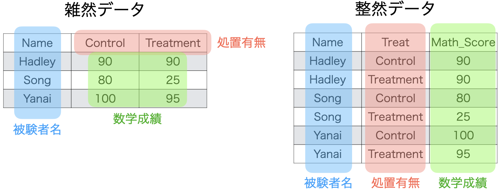
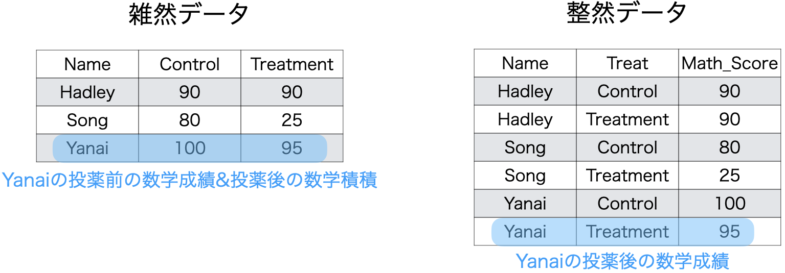
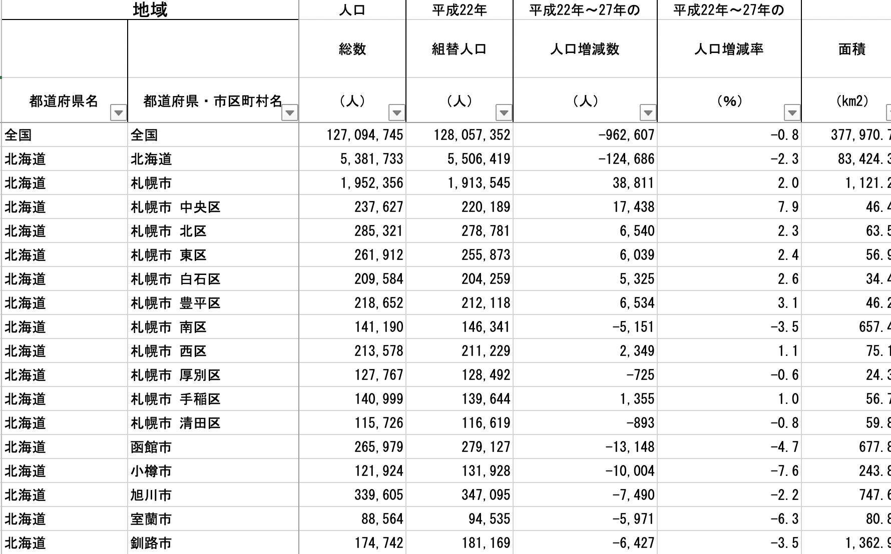

| Name | Control | Treatment |
|---|---|---|
| Hadley | 90 | 90 |
| Song | 80 | 25 |
| Yanai | 100 | 95 |
本章ではグラフの作成に適した形へデータを整形することについて学習します。ただし、これはグラフに限られた話ではありません。作図に適したデータは分析にも適します。
整然データ (tidy data)とは
分析や作図に適したデータの形は整然データ、または簡潔データ (tidy data)と呼ばれます。整然データの概念はtidyverse世界の産みの親であるHadely Wickham先生が提唱した概念であり、詳細は Wickham (2014) を参照してください。
整然データは目指す到達点は非常に単純です。それは「データの構造 (structure)と意味 (semantic)を一致させる」ことです。そして、この「意味」を出来る限り小さい単位で分解します。
例えば、3人で構成されたあるクラス内の被験者に対し、投薬前後に測定した数学成績があるとします。投薬前の成績は"Control"、投薬後の状況を"Treatment"とします。これをまとめたのが 表 1 です。
また、以上の表は転置も可能であり、以下のように表現することが可能です ( 表 2 )。
| Treat | Hadely | Song | Yanai |
|---|---|---|---|
| Control | 90 | 80 | 100 |
| Treatment | 90 | 25 | 95 |
2つのデータが持つ情報は全く同じです。これは「同じ意味を持つが、異なる構造を持つ」とも言えます。このような多様性が生じる理由は行と列のあり方が各値を説明するに十分ではないからです。異なるデータ構造として表現される余地があるということです。
たとえば、 表 1 の場合、各列は以下のような3つの情報があります。
Name: 被験者名Control: 投薬前の数学成績Treatment: 投薬後の数学成績
このデータの問題は「投薬有無」と「数学成績」が2回登場したという点です。1は問題ありませんが、2と3の値は「投薬有無 \(\times\) 数学成績」の組み合わせです。一つの変数に2つの情報が含まれていますね。これによって、投薬有無を行にしても列にしてもいいわけです。「ならばこっちの方が柔軟だしいいのでは?」と思う方もいるかも知れません。しかし、パソコンはこの曖昧さが嫌いです。なぜなら、人間のような思考ができないからです。データフレームは縦ベクトルの集合であるから、各列には一つの情報のみ格納する必要があります。たとえば、以下のように列を変更するとしましょう。
Name: 被験者名Treat: 投薬有無Math_Score: 数学成績
Treatは投薬前なら"Control"の値を、投薬後なら"Treatment"の値が入ります。Math_Socreには数学成績が入ります。これに則って表に直したのが 表 3 です。
| Name | Treat | Math_Score |
|---|---|---|
| Hadley | Control | 90 |
| Hadley | Treatment | 90 |
| Song | Control | 80 |
| Song | Treatment | 25 |
| Yanai | Control | 100 |
| Yanai | Treatment | 95 |
表が長くなりましたが、これなら一つの列に2つ以上の情報が含まれることはありません。この場合、 表 1 と 表 2 のように、行と列を転置することができるでしょうか。
| Name | Hadley | Hadley | Song | Song | Yanai | Yanai |
|---|---|---|---|---|---|---|
| Treat | Control | Treatment | Control | Treatment | Control | Treatment |
| Math_Score | 90 | 90 | 80 | 25 | 100 | 95 |
その結果が 表 4 ですが、いかがでしょうか。まず、列名が重複している時点でアウトですし、人間が見ても非常に分かりにくい表になりました。また、一つの列に異なるデータ (この場合、character型とnumeirc型)が混在しています。パソコンから見てはわけのわからないデータになったわけです。
ここまで来たら整然データのイメージはある程度掴めたかも知れません。具体的に整然データとは次の4つの条件を満たすデータです(Wickham 2014)。
- 1つの列は、1つの変数を表す。
- 1つの行は、1つの観測を表す。
- 1つのセル（特定の列の特定の行）は、1つの値を表す。
- 1つの表は、1つの観測単位 (unit of observation)をもつ（異なる観測単位が混ざっていない）。
以下でも、 表 1 と@tbl-tidydata-intro-3 を対比しながら、以上の4条件をより詳しく説明します。
1つの列は、1つの変数を表す
表 1 と 表 3 に含まれる情報は以下の3つで共通しています。
- 被験者名
- 投薬有無
- 数学成績
これらの情報がそれぞれデータの変数になるわけですが、整然データは一つの列が一つの変数を表します。それではまず、 表 1 ( 図 1 の左)から考えてみましょう。この図には3つの情報が全て含まれています。しかし、数学成績は2列に渡って格納されており、「1列1変数」の条件を満たしておりません。一方、 表 3 ( 図 1 の右)は投薬前後を表すTreat変数を作成し、その値に応じた数学成績が格納されており、「1列1変数」の条件を満たしています。

「1列1変数」は整然データの最も基本となる条件であり、整然データ作成の出発点とも言えます。
1つの行は、1つの観測を表す
図 2 の左は一行当たり、いくつの観察が含まれているでしょうか。そのためにはこのデータが何を観察しているかを考える必要があります。このデータは投薬前後の数学成績を観察し、量的に測定したものです。つまり、同じ人に対して2回観察を行ったことになります。したがって、投薬前の数学成績と投薬後の数学成績は別の観察であり、 図 2 の左は3行の表ですが、実は6回分の観察が含まれていることになります。1行に2つの観察が載っていることですね。

一方、 図 2 の右は6行のデータであり、観察回数とデータの行数が一致しています。つまり、1行に1観察となります。
今回は数学成績しか測っていたいので、簡単な例ですが、実際のデータには曖昧な部分があります。たとえば、投薬によって血圧が変化する可能性があるため、最高血圧もまた投薬前後に測定したとします。それが 表 5 の左です。
表 5: 1行1観察の例
| Name | Treat | Math | Blood |
|---|---|---|---|
| Hadley | Control | 90 | 110 |
| Hadley | Treatment | 90 | 115 |
| Song | Control | 80 | 95 |
| Song | Treatment | 25 | 110 |
| Yanai | Control | 100 | 100 |
| Yanai | Treatment | 95 | 95 |
| Name | Treat | Type | Value |
|---|---|---|---|
| Hadley | Control | Math | 90 |
| Hadley | Control | Blood | 110 |
| Hadley | Treatment | Math | 90 |
| Hadley | Treatment | Blood | 115 |
| Song | Control | Math | 80 |
| Song | Control | Blood | 95 |
| Song | Treatment | Math | 25 |
| Song | Treatment | Blood | 110 |
| Yanai | Control | Math | 100 |
| Yanai | Control | Blood | 100 |
| Yanai | Treatment | Math | 95 |
| Yanai | Treatment | Blood | 95 |
3人に投薬前後に数学成績と最高血圧を測定した場合の観察回数は何回でしょう。3人 \(\times\) 2時点 \(\times\) 2指標の測定だから12回の測定でしょうか。ならば、 表 5 の右が整然データでしょう。しかし、この場合、1列1変数という条件が満たされなくなります。Value列には数学成績と血圧が混在しており、2つの変数になります。ならば、どれも整然データではないということでしょうか。実は整然データは 表 5 の左です。なぜなら、「1観察=1値」ではないからです。データにおける観察とは観察単位ごとに測定された値の集合です。観察対象とは人や自治体、企業、国などだけでなく、時間も含まれます。たとえば、人の特徴 (性別、身長、所得、政治関心など)を測定しもの、ある日の特徴 (気温、株価など)を測定したもの全てが観察です。むろん、人 \(\times\) 時間のような組み合わせが観察単位ともなり得ます。この一つ一つの観察単位から得られた値の集合が観察です。 表 5 の分析単位は「人 \(\times\) 時間」です。成績や最高血圧は分析単位が持つ特徴や性質であって、分析単位ではありません。
1つのセルは、1つの値を表す
この条件に反するケースはあまりないかも知れません。たとえば、「Hadleyは処置前後の数学成績が同じだし、一行にまとめよう」という意味で 図 3 のような表を作る方もいるかも知れませんが、あまりいないでしょう。

図 3 の例は「1セル1値」の条件に明らかに反します。しかし、基準が曖昧な変数もあり、その一つが日付です。
表 6: 日付の扱い方
| Date | Stock |
|---|---|
| 2020/06/29 | 100 |
| 2020/06/30 | 105 |
| 2020/07/01 | 110 |
| 2020/07/02 | 85 |
| 2020/07/03 | 90 |
| Year | Month | Date | Stock |
|---|---|---|---|
| 2020 | 6 | 29 | 100 |
| 2020 | 6 | 30 | 105 |
| 2020 | 7 | 1 | 110 |
| 2020 | 7 | 2 | 85 |
| 2020 | 7 | 3 | 90 |
表 6 の左側の表はどうでしょうか。5日間の株価を記録した架空のデータですが、たしかにDate列には日付が1つずつ、Stockには株価の値が1つずつ格納されています。しかし、解釈によっては「Dateに年、月、日といった3つの値が含まれているぞ」と見ることもできます。この解釈に基づく場合、 表 6 の右側の表が整然データとなり、左側は雑然データとなります。このケースは第一条件であった「一列一変数」とも関係します。なぜなら、Dateという列が年・月・日といった3変数で構成されているとも解釈できるからです。
分析によっては左側のような表でも全く問題ないケースもあります。時系列分析でトレンド変数のみ必要ならこれでも十分に整然データと呼べます。しかし、季節変動などの要素も考慮するならば、左側は雑然データになります。データとしての使い勝手は右側の方が優れているのは確かです。
データを出来る限り細かく分解するほど情報量が豊かになりますが、それにも限度はあるでしょう。たとえば、「Yearは実は世紀の情報も含まれているのでは…?」という解釈もできますが、これを反映してデータ整形を行うか否かは分析の目的と分析モデルによって異なります。この意味で、明らかな雑然データはあり得ますが、明らかな整然データは存在しないでしょう。どちらかといえば、整然さの度合いがあり、「これなら十分に整然データと言えないだろうか」と判断できれば十分ではないかと筆者 (Song)は考えます。
1つの表は、1つの観測単位をもつ
e-statなどから国勢調査データをダウンロードした経験はあるでしょうか。以下の 図 4 は2015年度国勢調査データの一部です。

このデータの観察単位はなんでしょうか。データのの1行目は全国の人口を表しています。つまり、単位は国となります。しかし、2行目は北海道の人口です。この場合の観測単位は都道府県となります。つづいて、3行目は札幌市なので単位は市区町村になります。4行目は札幌市中央区、つまり観測単位が行政区になっています。そして14行目は函館市でまた単位は市区町村に戻っています。実際、会社や政府が作成するデータには 図 4 や 図 5 のようなものが多いです。とりわけ、 図 5 のように、最後の行に「合計」などが表記されている場合が多いです。

このような表・データを作成することが悪いことではありません。むしろ、「読む」ための表ならこのような書き方が一般的でしょう。しかし、「分析」のためのデータは観察の単位を統一する必要があります。
Wide型からLong型へ
以下では「1列1変数」の条件を満たすデータの作成に便利なpivot_longer()とpivot_wider()関数について解説します。この関数群はおなじみの{dplyr}でなく、{tidyr}パッケージが提供している関数ですが、どれも{tidyverse}パッケージ群に含まれているため、{tidyverse}パッケージを読み込むだけで十分です。本節ではpivot_longer()を、次節ではpivot_wider()を取り上げます。
まず、pivot_longer()ですが、この関数は比較的に新しい関数であり、これまでは{tidyr}のgather()関数が使われてきました。しかし、gahter()関数は将来、なくなる予定の関数であり、今から{tidyr}を学習する方はpivot_*()関数群に慣れておきましょう。
まずは{tidyverse}パッケージを読み込みます。
今回は様々な形のデータを変形する作業をするので、あるデータセットを使うよりも、架空の簡単なデータを使います。
df1 <- tibble(
Name = c("Hadley", "Song", "Yanai"),
Control = c(90, 80, 100),
Treatment = c(90, 25, 95),
Gender = c("Male", "Female", "Female")
)
df1# A tibble: 3 × 4
Name Control Treatment Gender
<chr> <dbl> <dbl> <chr>
1 Hadley 90 90 Male
2 Song 80 25 Female
3 Yanai 100 95 Femaleこのデータは既に指摘した通り「1列1変数」の条件を満たしております。この条件を満たすデータは以下のような形となります。
# A tibble: 6 × 4
Name Gender Treat Math_Score
<chr> <chr> <chr> <dbl>
1 Hadley Male Control 90
2 Hadley Male Treatment 90
3 Song Female Control 80
4 Song Female Treatment 25
5 Yanai Female Control 100
6 Yanai Female Treatment 95Treat変数が作成され、元々は変数名であった"Control"と"Treatment"が値として格納されます。この変数をキー変数と呼びます。そして、キー変数の値に応じた数学成績がMath_Scoreという変数でまとめられました。この変数を値変数と呼びます。
「1列1変数」を満たさなかった最初のデータは「Wide型データ」、これを満たすようなデータは「Long型データ」と呼ばれます。これは相対的に最初のデータが横に広いから名付けた名前であって、「Wide型=雑然データ」もしくは「Long型=雑然データ」ではないことに注意してください1。
Wide型データをLong型へ変換する関数がpivot_longer()であり、基本的な使い方は以下の通りです。
ここでは同じ変数がControlとTreatment変数で分けられているため、まとめる変数はこの2つであり、cols = c(Control, Treatment)と指定します。ControlとTreatmentは"で囲んでも、囲まなくても同じです。また、{dplyr}のselect()関数で使える変数選択の関数 (starts_with()、where()など)や:演算子も使用可能です。また、cols引数はpivot_longer()の第2引数であるため、cols =は省略可能です（第一引数はパイプにより既に渡されています）。
names_toとvalues_to引数はそれぞれキー変数名と値変数名を指定する引数で、ここは必ず"で囲んでください。このdf1をLong型へ変換し、df1_Lと名付けるコードが以下のコードです。
df1_L <- df1 %>%
pivot_longer(Control:Treatment,
names_to = "Treat",
values_to = "Math_Score")
df1_L# A tibble: 6 × 4
Name Gender Treat Math_Score
<chr> <chr> <chr> <dbl>
1 Hadley Male Control 90
2 Hadley Male Treatment 90
3 Song Female Control 80
4 Song Female Treatment 25
5 Yanai Female Control 100
6 Yanai Female Treatment 95これだけでもpivot_longer()関数を使ってWide型からLong型への変換は問題なくできますが、以下ではもうちょっと踏み込んだ使い方について解説します。「ここまでで十分だよ」という方は、ここを飛ばしても構いません。
今回の実習データdf3は3人の体重を3日間に渡って計測したものです。ただし、ドジっ子のSongは2日目にうっかり測るのを忘れており、欠損値となっています。
df2 <- tibble(
Name = c("Hadley", "Song", "Yanai"),
Day1 = c(75, 120, 70),
Day2 = c(73, NA, 69),
Day3 = c(71, 140, 71)
)
df2# A tibble: 3 × 4
Name Day1 Day2 Day3
<chr> <dbl> <dbl> <dbl>
1 Hadley 75 73 71
2 Song 120 NA 140
3 Yanai 70 69 71まず、これをこれまでのやり方でLong型へ変形し、df2_Lと名付けます。
# A tibble: 9 × 3
Name Days Weight
<chr> <chr> <dbl>
1 Hadley Day1 75
2 Hadley Day2 73
3 Hadley Day3 71
4 Song Day1 120
5 Song Day2 NA
6 Song Day3 140
7 Yanai Day1 70
8 Yanai Day2 69
9 Yanai Day3 71これでも問題ないかも知れませんが、以下のような操作を追加に行うとします。
Weightが欠損している行を除去するDays列の値から"Day"を除去し、numeric型にする
以上の作業を行うには、dplyrが便利でしょう。ちなみにstr_remove()関数が初めて登場しましたが、簡単に説明しますと、str_remove("X123", "X")は"X123"から"X"を除去し、"123"のみ残す関すです。残された値が数字のみであってもデータ型はcharacter型なので、もう一回、numeric型に変換する必要があります2。dplyrを使ったコードは以下の通りです。
# 1. WeightがNAのケースを除去
# 2. Days変数の値から"Day"を除去
# 3. Days変数をnumeric型へ変換
df2_L %>%
filter(!is.na(Weight)) %>% # 1
mutate(Days = str_remove(Days, "Day"), # 2
Days = as.numeric(Days)) # 3# A tibble: 8 × 3
Name Days Weight
<chr> <dbl> <dbl>
1 Hadley 1 75
2 Hadley 2 73
3 Hadley 3 71
4 Song 1 120
5 Song 3 140
6 Yanai 1 70
7 Yanai 2 69
8 Yanai 3 71実はこの作業、pivot_longer()内で行うことも可能です。たとえば、values_toで指定した変数の値が欠損しているケースを除去するにはvalues_drop_na引数をTRUEに指定するだけです。
# Weight変数がNAのケースを除去する
df2 %>%
pivot_longer(starts_with("Day"),
names_to = "Days",
values_to = "Weight",
values_drop_na = TRUE)# A tibble: 8 × 3
Name Days Weight
<chr> <chr> <dbl>
1 Hadley Day1 75
2 Hadley Day2 73
3 Hadley Day3 71
4 Song Day1 120
5 Song Day3 140
6 Yanai Day1 70
7 Yanai Day2 69
8 Yanai Day3 71それでは、キー変数から共通する文字列を除去するにはどうすれば良いでしょうか。この場合、names_prefix引数を使います。これはnames_toで指定した新しく出来る変数の値における接頭詞を指定し、それを除去する引数です。今回は"Day1"、"Day2"、"Day3"から"Day"を除去するので、names_prefix = "Day"と指定します。こうすることで、Days列から"Day"が除去されます。ただし、数字だけ残っても、そのデータ型はcharacter型ですので、このデータ型を変換する必要があります。ここで使うのがnames_transform引数であり、これはlist型のオブジェクトを渡す必要があります。Days列をnumeric型にする場合はlist(Days = as.numeric)です。複数の列のデータ型を変える場合、list()の中に追加していきます。それでは実際に走らせてみましょう。
# 1. Day変数の値から"Day"を除去する
# 2. Day変数をinteger型に変換
# 3. Weight変数がNAのケースを除去する
df2 %>%
pivot_longer(starts_with("Day"),
names_to = "Days",
names_prefix = "Day", # 1
names_transform = list(Days = as.numeric), # 2
values_to = "Weight",
values_drop_na = TRUE) # 3# A tibble: 8 × 3
Name Days Weight
<chr> <dbl> <dbl>
1 Hadley 1 75
2 Hadley 2 73
3 Hadley 3 71
4 Song 1 120
5 Song 3 140
6 Yanai 1 70
7 Yanai 2 69
8 Yanai 3 71これでWide型をLong型が変換され、整然でありながら、より見栄の良いデータが出来上がりました。他にもpivot_longer()は様々な引数に対応しており、詳細は?pivot_longerやレファレンスページを参照してください。
Long型からWide型へ
ご存知の通り、「Long型データ=整然データ」ではありません。実際、 表 5 の右はLong型データですが、1列に2つの変数が含まれており、整然データとは言えません。このようなデータはいくらでもあります。とりわけ、「分析」のためじゃなく、「読む」ための表の場合において多く発見されます。
表 7: Long型データの例
| 都道府県 | 区分 | 人口 | 面積 |
|---|---|---|---|
| 北海道 | 総人口 | 5381733 | 83424.31 |
| 外国人 | 21676 | 83424.31 | |
| 青森県 | 総人口 | 1308265 | 9645.59 |
| 外国人 | 3447 | 9645.59 | |
| 岩手県 | 総人口 | 1279594 | 15275.01 |
| 外国人 | 5017 | 15275.01 | |
| 宮城県 | 総人口 | 2333899 | 7282.22 |
| 外国人 | 13989 | 7282.22 |
| 都道府県 | 総人口 | 外国人 | 面積 |
|---|---|---|---|
| 北海道 | 5381733 | 21676 | 83424.31 |
| 青森県 | 1308265 | 3447 | 9645.59 |
| 岩手県 | 1279594 | 5017 | 15275.01 |
| 宮城県 | 2333899 | 13989 | 7282.22 |
変数名が日本語になっていますが、これは「読むための表」を読み込むことを仮定しています。このように変数名として日本語は使えますが、自分でデータセットを作成する際、変数名はローマ字にすることを強く推奨します。
表 7 の左の場合、人口列に総人口と外国人人口といった2つの変数の値が格納されているため、整然データではありません。これを整然データにしたものが右の表です。本節ではLong型データをWide型データへ変換するpivot_wider()関数を紹介します。この関数は同じく{tidyr}が提供しているspread()関数とほぼ同じ関数ですが、今はpivot_wider()の使用が推奨されており、spread()はいずれか{tidyr}から外される予定です。
まずは、実習用データを読み込みます。
# A tibble: 94 × 4
都道府県 区分 人口 面積
<chr> <chr> <dbl> <dbl>
1 北海道 総人口 5381733 83424.
2 <NA> 外国人 21676 83424.
3 青森県 総人口 1308265 9646.
4 <NA> 外国人 3447 9646.
5 岩手県 総人口 1279594 15275.
6 <NA> 外国人 5017 15275.
7 宮城県 総人口 2333899 7282.
8 <NA> 外国人 13989 7282.
9 秋田県 総人口 1023119 11638.
10 <NA> 外国人 2914 11638.
# … with 84 more rowsこのデータは2015年国勢調査から抜粋したデータであり、各変数の詳細は以下の通りです。
| 変数名 | 説明 |
|---|---|
| 都道府県 | 都道府県名 |
| 区分 | 総人口/外国人人口の区分 |
| 人口 | 人口 (人) |
| 面積 | 面積 (km$^2$) |
まずは変数名が日本語になっているので、rename()関数を使ってそれぞれPref、Type、Population、Areaに変更します。
# A tibble: 94 × 4
Pref Type Population Area
<chr> <chr> <dbl> <dbl>
1 北海道 総人口 5381733 83424.
2 <NA> 外国人 21676 83424.
3 青森県 総人口 1308265 9646.
4 <NA> 外国人 3447 9646.
5 岩手県 総人口 1279594 15275.
6 <NA> 外国人 5017 15275.
7 宮城県 総人口 2333899 7282.
8 <NA> 外国人 13989 7282.
9 秋田県 総人口 1023119 11638.
10 <NA> 外国人 2914 11638.
# … with 84 more rows次は、Pref列の欠損値を埋めましょう。ここの欠損値は、当該セルの一つ上のセルの値で埋まりますが、これはfill()関数で簡単に処理できます。欠損値を埋めたい変数名をfill()の引数として渡すだけです。
# A tibble: 94 × 4
Pref Type Population Area
<chr> <chr> <dbl> <dbl>
1 北海道 総人口 5381733 83424.
2 北海道 外国人 21676 83424.
3 青森県 総人口 1308265 9646.
4 青森県 外国人 3447 9646.
5 岩手県 総人口 1279594 15275.
6 岩手県 外国人 5017 15275.
7 宮城県 総人口 2333899 7282.
8 宮城県 外国人 13989 7282.
9 秋田県 総人口 1023119 11638.
10 秋田県 外国人 2914 11638.
# … with 84 more rowsそして、いよいよpivot_wider()関数の出番ですが、基本的に使い方は以下の通りです。
まず、キー変数名は列として展開する変数名であり、ここではTypeになります。そして、値変数名は展開される値の変数であり、ここではPopulationになります。つまり、「PopulationをTypeごとに分けて別の列にする」ことになります。また、values_from引数は長さ2以上のベクトルを指定することで、複数の値変数を指定することも可能です。たとえば、df3にIncomeという平均所得を表す列があり、これらも総人口と外国人それぞれ異なる値を持っているとしたら、values_from = c(Population, Income)のように複数の値変数を指定することが出来ます。今回は値変数が1つのみですが、早速やってみましょう。
# A tibble: 47 × 4
Pref Area 総人口 外国人
<chr> <dbl> <dbl> <dbl>
1 北海道 83424. 5381733 21676
2 青森県 9646. 1308265 3447
3 岩手県 15275. 1279594 5017
4 宮城県 7282. 2333899 13989
5 秋田県 11638. 1023119 2914
6 山形県 9323. 1123891 5503
7 福島県 13784. 1914039 8725
8 茨城県 6097. 2916976 41310
9 栃木県 6408. 1974255 26494
10 群馬県 6362. 1973115 37126
# … with 37 more rowsまた、日本語の変数名が出来てしまったので、それぞれTotalとForeignerに変更し、relocate()関数を使ってAreaを最後の列に移動します。
df3_W <- df3_W %>%
rename("Total" = 総人口,
"Foreigner" = 外国人) %>%
relocate(Area, .after = last_col())
df3_W# A tibble: 47 × 4
Pref Total Foreigner Area
<chr> <dbl> <dbl> <dbl>
1 北海道 5381733 21676 83424.
2 青森県 1308265 3447 9646.
3 岩手県 1279594 5017 15275.
4 宮城県 2333899 13989 7282.
5 秋田県 1023119 2914 11638.
6 山形県 1123891 5503 9323.
7 福島県 1914039 8725 13784.
8 茨城県 2916976 41310 6097.
9 栃木県 1974255 26494 6408.
10 群馬県 1973115 37126 6362.
# … with 37 more rowsこれで整然データの出来上がりです。
このpivot_wider()関数はpivot_longer()関数同様、様々な引数を提供しておりますが、主に使う機能は以上です。他にはpivot_wider()によって出来た欠損値を埋める引数であるvalues_fillがあり、デフォルト値はNULLです。ここに0や"Missing"などの長さ1のベクトルを指定すれば、指定した値で欠損値が埋まります。
pivot_wider()関数の詳細は?pivot_widerもしくは、レファレンスページを参照してください。
列の操作
他にも「1列1変数」の条件を満たさないケースを考えましょう。pivot_longer()は1つの変数が複数の列に渡って格納されている際に使いましたが、今回は1つの列に複数の変数があるケースを考えてみましょう。たとえば、年月日が1つの列に入っている場合、これを年、月、日の3列で分割する作業です。また、これと関連して、列から文字列を除去し、数値のみ残す方法についても紹介します。
実習用データを読み込んでみましょう。
# A tibble: 172 × 5
ID Date Week Confirmed_Japan Confirmed_Korea
<dbl> <chr> <chr> <chr> <chr>
1 1 2020/1/16 木 1人 <NA>
2 2 2020/1/17 金 0人 <NA>
3 3 2020/1/18 土 0人 <NA>
4 4 2020/1/19 日 0人 <NA>
5 5 2020/1/20 月 0人 1人
6 6 2020/1/21 火 0人 0人
7 7 2020/1/22 水 0人 0人
8 8 2020/1/23 木 0人 0人
9 9 2020/1/24 金 2人 1人
10 10 2020/1/25 土 0人 0人
# … with 162 more rowsこのデータは2020年1月16日から2020年7月5日まで、COVID-19 (新型コロナ)の新規感染者数を日本と韓国を対象に収集したものです。データはWikipedia (日本 / 韓国)から収集しました。韓国の新規感染者数は最初の4日分が欠損値のように見えますが、最初の感染者が確認されたのが1月20日のため、1月19日までは欠損となっています。
| 変数名 | 説明 |
|---|---|
| ID | ケースID |
| Date | 年月日 |
| Week | 曜日 |
| Confirmed_Japan | 新規感染者数 (日本) |
| Confirmed_Korea | 新規感染者数 (韓国) |
このデータの場合、観察単位は「国 \(\times\) 日」です。しかし、df4は1行に日本と韓国の情報が格納されており「1行1観察」の条件を満たしておりません。したがって、pivot_longer()を使ってLong型へ変換し、新しいデータの名前をdf4_Lと名付けます。
df4_L <- df4 %>%
pivot_longer(cols = starts_with("Confirmed"),
names_to = "Country",
names_prefix = "Confirmed_",
values_to = "Confirmed")
df4_L# A tibble: 344 × 5
ID Date Week Country Confirmed
<dbl> <chr> <chr> <chr> <chr>
1 1 2020/1/16 木 Japan 1人
2 1 2020/1/16 木 Korea <NA>
3 2 2020/1/17 金 Japan 0人
4 2 2020/1/17 金 Korea <NA>
5 3 2020/1/18 土 Japan 0人
6 3 2020/1/18 土 Korea <NA>
7 4 2020/1/19 日 Japan 0人
8 4 2020/1/19 日 Korea <NA>
9 5 2020/1/20 月 Japan 0人
10 5 2020/1/20 月 Korea 1人
# … with 334 more rows続いて、新規感染者数を表すConfirmed列から「人」を除去しましょう。人間にとってはなんの問題もありませんが、パソコンにとって1人や5人は文字列に過ぎず、分析ができる状態ではありません。ここで使う関数がparse_number()です。引数として指定した列から数値のみ抽出します。"$1000"や"1, 324, 392"のような数値でありながら、character型として保存されている列から数値のみを取り出す際に使う関数です。使い方は以下の通りです。
似たようなものとしてparse_character()があり、これは逆に文字列のみ抽出する関数です。
ここではConfimedから数値のみ取り出し、Confrimed列に上書きし、それをdf4_Sと名付けます。
# A tibble: 344 × 5
ID Date Week Country Confirmed
<dbl> <chr> <chr> <chr> <dbl>
1 1 2020/1/16 木 Japan 1
2 1 2020/1/16 木 Korea NA
3 2 2020/1/17 金 Japan 0
4 2 2020/1/17 金 Korea NA
5 3 2020/1/18 土 Japan 0
6 3 2020/1/18 土 Korea NA
7 4 2020/1/19 日 Japan 0
8 4 2020/1/19 日 Korea NA
9 5 2020/1/20 月 Japan 0
10 5 2020/1/20 月 Korea 1
# … with 334 more rowsそれでは国、曜日ごとの新規感染者数を調べてみます。求める統計量は曜日ごとの新規感染者数の合計、平均、標準偏差です。まず、曜日は月から日の順になるよう、factor型に変換します。そして、国と曜日ごとに記述統計量を計算し、df4_S_Summary1という名で保存します。
df4_S <- df4_S %>%
mutate(Week = factor(Week,
levels = c("月", "火", "水", "木", "金", "土", "日")))
df4_S_Summary1 <- df4_S %>%
group_by(Country, Week) %>%
summarise(Sum = sum(Confirmed, na.rm = TRUE),
Mean = mean(Confirmed, na.rm = TRUE),
SD = sd(Confirmed, na.rm = TRUE),
.groups = "drop")
df4_S_Summary1# A tibble: 14 × 5
Country Week Sum Mean SD
<chr> <fct> <dbl> <dbl> <dbl>
1 Japan 月 2540 106. 156.
2 Japan 火 2093 87.2 111.
3 Japan 水 2531 105. 133.
4 Japan 木 2704 108. 151.
5 Japan 金 3083 123. 172.
6 Japan 土 3327 133. 189.
7 Japan 日 3244 130. 179.
8 Korea 月 1609 67.0 126.
9 Korea 火 1641 68.4 111.
10 Korea 水 1626 67.8 102.
11 Korea 木 1883 78.5 137.
12 Korea 金 2099 87.5 143.
13 Korea 土 2194 91.4 174.
14 Korea 日 2088 87 215.df4_S_Summary1はこの状態で整然データですが、もし人間が読むための表を作るなら、韓国と日本を別の列に分けた方が良いかも知れません。pivot_wider()を使って、日本と韓国のの新規感染者数を2列に展開します。
# A tibble: 7 × 7
Week Sum_Japan Sum_Korea Mean_Japan Mean_Korea SD_Japan SD_Korea
<fct> <dbl> <dbl> <dbl> <dbl> <dbl> <dbl>
1 月 2540 1609 106. 67.0 156. 126.
2 火 2093 1641 87.2 68.4 111. 111.
3 水 2531 1626 105. 67.8 133. 102.
4 木 2704 1883 108. 78.5 151. 137.
5 金 3083 2099 123. 87.5 172. 143.
6 土 3327 2194 133. 91.4 189. 174.
7 日 3244 2088 130. 87 179. 215.これで人間にとって読みやすい表が出来ました。今は「日本の合計」、「韓国の合計」、「日本の平均」、…の順番ですが、これを日本と韓国それぞれまとめる場合は、relocate()を使います。
df4_S_Summary1 %>%
pivot_wider(names_from = Country,
values_from = Sum:SD) %>%
relocate(Week, ends_with("Japan"), ends_with("Korea"))# A tibble: 7 × 7
Week Sum_Japan Mean_Japan SD_Japan Sum_Korea Mean_Korea SD_Korea
<fct> <dbl> <dbl> <dbl> <dbl> <dbl> <dbl>
1 月 2540 106. 156. 1609 67.0 126.
2 火 2093 87.2 111. 1641 68.4 111.
3 水 2531 105. 133. 1626 67.8 102.
4 木 2704 108. 151. 1883 78.5 137.
5 金 3083 123. 172. 2099 87.5 143.
6 土 3327 133. 189. 2194 91.4 174.
7 日 3244 130. 179. 2088 87 215.新規感染者が確認されるのは金〜日曜日が多いことが分かります。
曜日ではなく、月ごとに記述統計料を計算する場合は、まずDate列を年、月、日に分割する必要があります。具体的にはDateを"/"を基準に別ければいいです。そこで登場するのはseparate()関数であり、使い方は以下の通りです。
colsにはDateを指定し、intoは新しく出来る列名を指定します。今回はDateが3列に分割されるので、長さ3のcharacter型ベクトルを指定します。ここではYear、Month、Dayとしましょう。最後のsep引数は分割する基準となる文字を指定します。df4のDateは"2020/06/29"のように年月日が"/"で分けられているため、"/"を指定します。実際にやってみましょう。
# A tibble: 344 × 7
ID Year Month Day Week Country Confirmed
<dbl> <chr> <chr> <chr> <fct> <chr> <dbl>
1 1 2020 1 16 木 Japan 1
2 1 2020 1 16 木 Korea NA
3 2 2020 1 17 金 Japan 0
4 2 2020 1 17 金 Korea NA
5 3 2020 1 18 土 Japan 0
6 3 2020 1 18 土 Korea NA
7 4 2020 1 19 日 Japan 0
8 4 2020 1 19 日 Korea NA
9 5 2020 1 20 月 Japan 0
10 5 2020 1 20 月 Korea 1
# … with 334 more rows新しく出来た変数は元の変数があった場所になります。ここまで来たら月ごとに新規感染者の記述統計量は計算できます。曜日ごとに行ったコードのWeekをMonthに変えるだけです。また、Monthは数字のみで構成されたcharacter型であるため、このままでも問題なくソートされます。したがって、別途factor化の必要もありません（むろん、してもいいですし、むしろ推奨されます）。
df4_S_Summary2 <- df4_S %>%
group_by(Country, Month) %>%
summarise(Sum = sum(Confirmed, na.rm = TRUE),
Mean = mean(Confirmed, na.rm = TRUE),
SD = sd(Confirmed, na.rm = TRUE),
.groups = "drop")
df4_S_Summary2# A tibble: 14 × 5
Country Month Sum Mean SD
<chr> <chr> <dbl> <dbl> <dbl>
1 Japan 1 17 1.06 1.34
2 Japan 2 213 7.34 7.81
3 Japan 3 1723 55.6 42.4
4 Japan 4 12135 404. 146.
5 Japan 5 2763 89.1 73.0
6 Japan 6 1742 58.1 23.0
7 Japan 7 929 186. 45.1
8 Korea 1 11 0.917 1.44
9 Korea 2 3139 108. 203.
10 Korea 3 6737 217. 222.
11 Korea 4 887 29.6 26.6
12 Korea 5 729 23.5 16.2
13 Korea 6 1348 44.9 10.4
14 Korea 7 289 57.8 6.61df4_S_Summary2 %>%
pivot_wider(names_from = Country,
values_from = Sum:SD) %>%
relocate(Month, ends_with("Japan"), ends_with("Korea"))# A tibble: 7 × 7
Month Sum_Japan Mean_Japan SD_Japan Sum_Korea Mean_Korea SD_Korea
<chr> <dbl> <dbl> <dbl> <dbl> <dbl> <dbl>
1 1 17 1.06 1.34 11 0.917 1.44
2 2 213 7.34 7.81 3139 108. 203.
3 3 1723 55.6 42.4 6737 217. 222.
4 4 12135 404. 146. 887 29.6 26.6
5 5 2763 89.1 73.0 729 23.5 16.2
6 6 1742 58.1 23.0 1348 44.9 10.4
7 7 929 186. 45.1 289 57.8 6.61平均値から見ると、日本は7都道府県を対象に緊急事態宣言が行われた4月がピークで緩やかに減少していますが、7月になって上がり気味です。韓国はカルト宗教団体におけるクラスターが発生した3月がピークで、6月からまた上がり気味ですね。傾向としては韓国が日本に1ヶ月先行しているように見えます。
それではseparate()関数の他の引数についても簡単に紹介します。まず、sep引数はnumeric型でも可能です。この場合、文字列内の位置を基準に分割されます。年月日が20200629のように保存されている場合は、何らかの基準となる文字がありません。この場合、sep = c(4, 6)にすると、「"20200629"の4文字目と5文字目の間で分割、6文字目と7文字目の間で分割」となります。また、sep = c(-4, -2)のように負の値も指定可能であり、この場合は右からの位置順で分割します。
また、separate()後は元の変数がなくなりますが、remove = FALSEの場合、元の変数 (ここではDate)が残ります。他にもconvert引数もあります。convert = TRUEの場合、適切なデータ型へ変換してくれます。デフォルト値はFALSEであり、この場合、character型として分割されます。先ほどの例だとYearもMonthもDayも現在はcharacter型です。separate()内でconvert = TRUEを追加すると、分割後のYear、Month、Dayはnumeric型として保存されます。
separate()の詳細は?separateまたは、レファレンスページを参照してください。